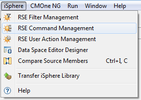

RSE Command Management
With iSphere RSE Command Management you can export some or all
commands from your workspace to a repository. A repository is an XML
file on your local PC or a network drive. You can then import some or
all commands from a repository to your workspace. The repository can
act as a backup for your commands.
Here are some other scenarios where you might find Command
Management useful:
- Your workspace is corrupted and you need to create a new one.
In this case you can export your commands from the old workspace and
import them into the new one.
- You want to share your commands with your colleagues.
- You have RDi installed on a computer in your office and at
home and want to synchronize your commands.
To open the iSphere RSE Command Management dialog, open the iSphere menu
click on the Sun icon labeled with RSE Command Management.

Choosing what to Manage
You now need to specify what you want to manage, and also the
repository name:
Editing Area
The commands in the workspace and in the repository will be
displayed in up to four separate horizontal panes.
- Edit workspace and repository commands
- Edit only workspace commands
- Edit only repository commands
Click the appropriate button. The default,
Edit workspace and repository commands, is suitable for the first
time you want to create a new repository. With this option you can:
- Push commands from the workspace to the repository and vice versa.
- Delete commands from the workspace.
- Delete commands from the repository.
The next two option, Edit only workspace commands and
Edit only repository commands are suitable for removing commands from
the workspace or the repository.
Profile
Select the profile that contains the commands you want to manage.
Single Compile Type
If this is checked, then you will need to select a compile type using
the Compile Type drop down. Only commands of the selected compile type
will be considered for action, and the compile type name will not be
saved.
If this is unchecked, then all commands will be considered for
action and the connections between commands and compile types will be
saved.
Compile Type
Use this option to specify the compile type you want to manage, when
Single compile type is checked.
Repository
Specify the location and name of the repository. A single compile type
repository must have a suffix of
.rsecmd and a repository for all commands must have a suffix of
.rsecmdall.
Managing Commands
Basically managing commands follows the pattern of managing filters. Therefore
you are asked to refer to chapter RSE Filter Managing
to see how managing RSE resources works.